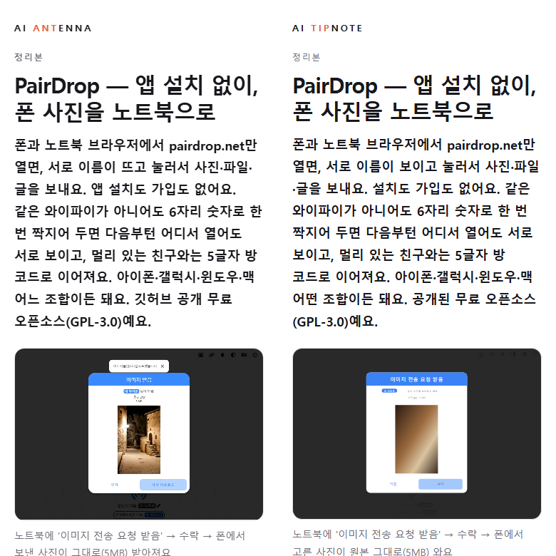
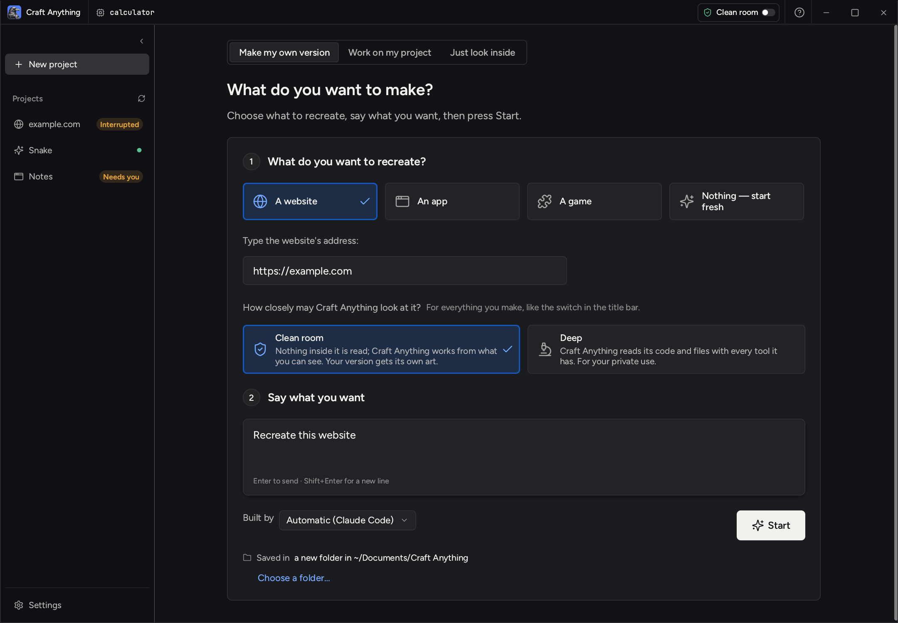
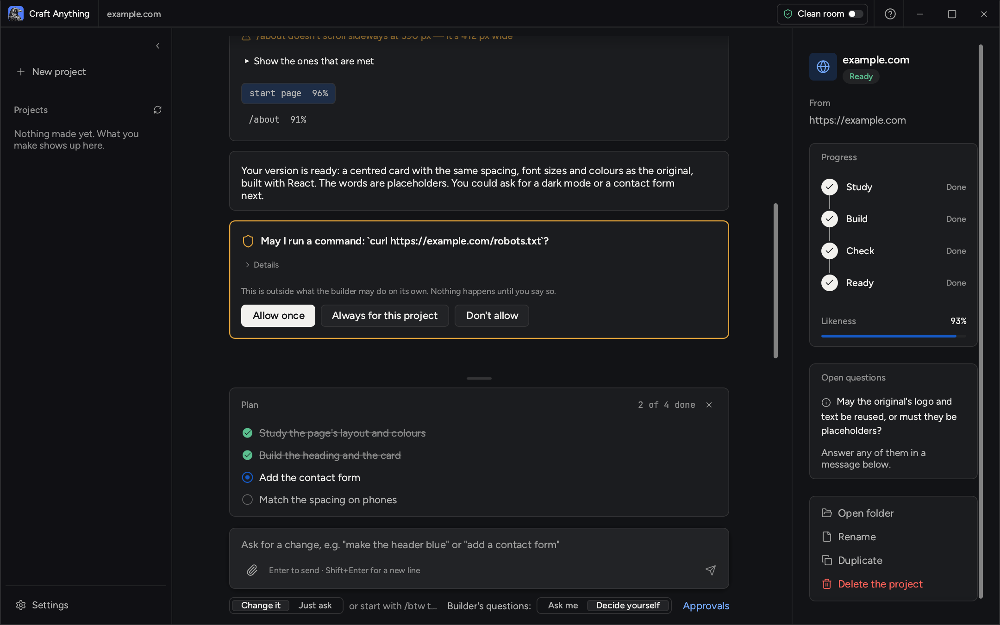
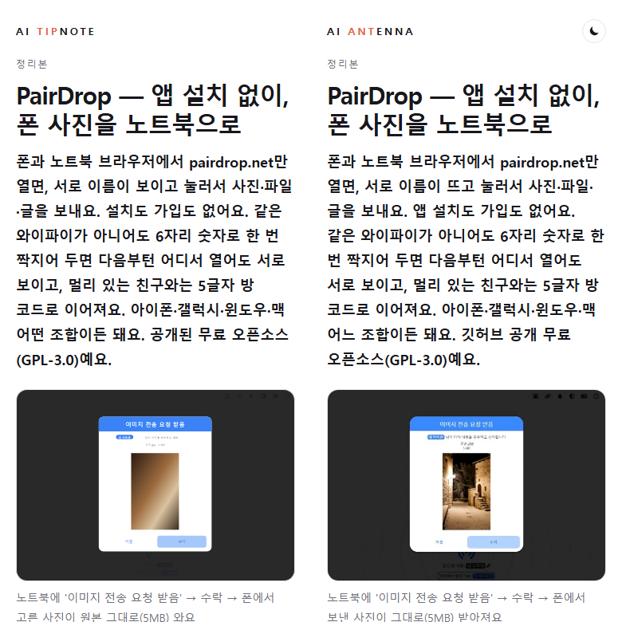
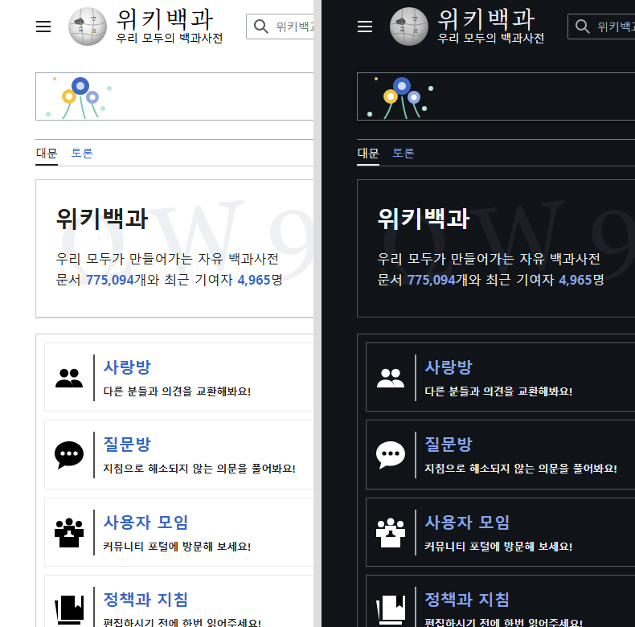

웹사이트·앱·게임 주소를 넣으면 내 컴퓨터의 클로드 코드가 새로 짓고, 원본을 컴퓨터·태블릿·폰 세 크기로 찍어 몇 % 닮았는지 매기며 90%를 넘을 때까지 스스로 고치는 무료 오픈소스 앱이에요(MIT 또는 Apache-2.0). 우리 정리본 페이지로 돌려 보니 스스로 77% → 89% → 90% → 91%까지 고쳤고, '제 거예요'라고 하자 원래 글·로고·그림을 되돌려 100%가 됐어요.

깃허브 storytold/craft-anything의 Releases에서 윈도는 craft-anything-<버전>-windows-x64.msi(설치) 또는 -portable.zip(압축만 풀면 끝), 맥은 dmg를 받아요. 아직 초기(alpha) 버전이에요.
앱을 열고 Make my own version → A website(앱이면 An app, 게임이면 A game)를 고른 뒤 주소를 넣어요. 'How closely'는 기본 Clean room 그대로 — 원본 속 코드는 안 읽고 방문자가 보는 화면만으로 지어요. 요청 칸엔 'Recreate this website'처럼 원하는 걸 적고 Start.

공부(세 크기로 찍기·메뉴 열기) → 짓기 → 검사 → 준비 네 단계가 차례로 지나가요. 검사에서 닮음이 90%가 안 되면 다른 곳을 찾아 고치고 다시 재요. 우리 페이지는 첫 짓기에 약 17분, 스스로 네 번 재서 91%에 끝났어요.

확인을 안 받으면 로고·사진·긴 글은 자리표시로 바꿔서 지어요(우리 페이지는 로고가 'AI TIPNOTE'로 바뀜). 아래 칸에 '이 페이지는 제 거예요. 원래 글이랑 로고, 그림을 그대로 넣어 주세요.'라고 보내면 그대로 옮겨요. 우리 페이지는 약 2분 뒤 100%가 됐어요.

다 되면 결과는 내 폴더(문서/Craft Anything/<프로젝트>/app)에 새 코드로 남아요. 아래 칸에 '다크 모드 넣어 줘'처럼 한마디 하면 바로 고쳐요. 우리 페이지엔 약 2분 만에 오른쪽 위 달 버튼이 생겼어요.

앱 없이 터미널에서도 돼요. 아래 '복사해서 쓰기'의 명령에서 주소만 바꿔요. 이어서 고칠 땐 --continue-in 뒤에 프로젝트 폴더를 줘요.
앱 요청 칸에
Recreate this website
로고·글이 자리표시로 바뀌었을 때
이 페이지는 제 거예요. 원래 글이랑 로고, 그림을 그대로 넣어 주세요.
다 지은 뒤 아래 칸에
다크 모드 넣어 줘
다 지은 뒤 아래 칸에
맨 아래에 문의하기 폼을 넣어 줘
터미널에서(주소만 바꿔요)
craft-anything-cli rebuild https://내-사이트-주소 "Recreate this website"
안 될 때 먼저
craft-anything-cli doctor
도움이 되셨다면
@ai.antenna.kr
에서 바로 쓰는 AI 활용법을 계속 올립니다.